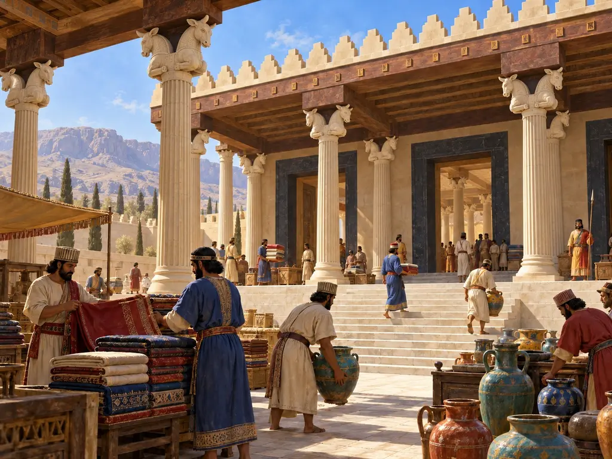
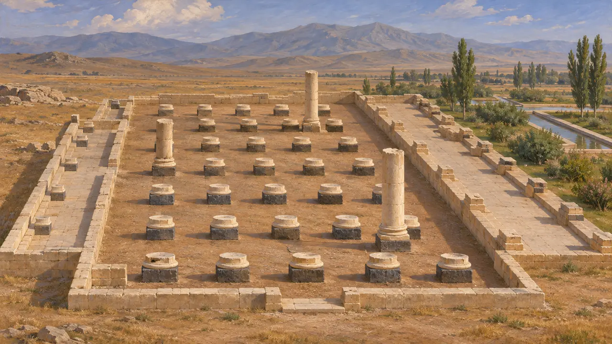
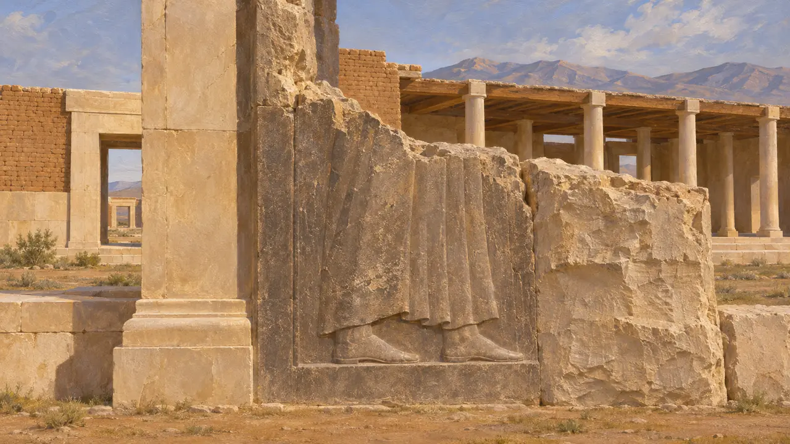
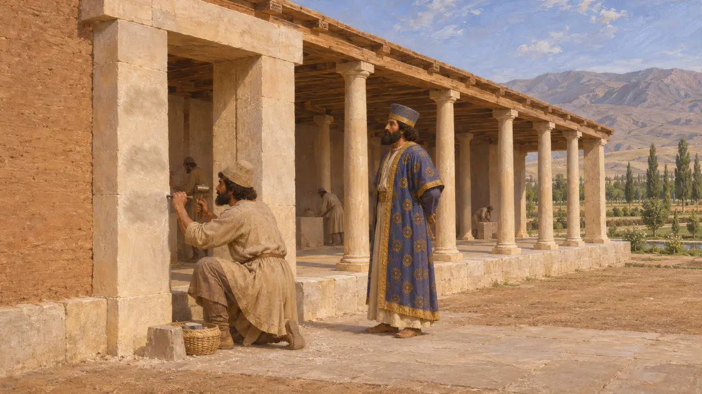
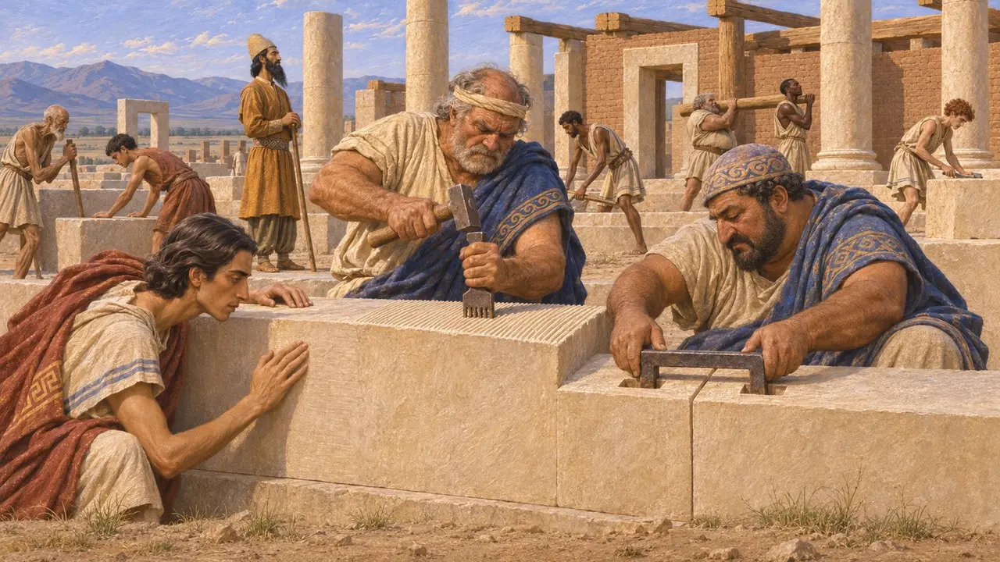
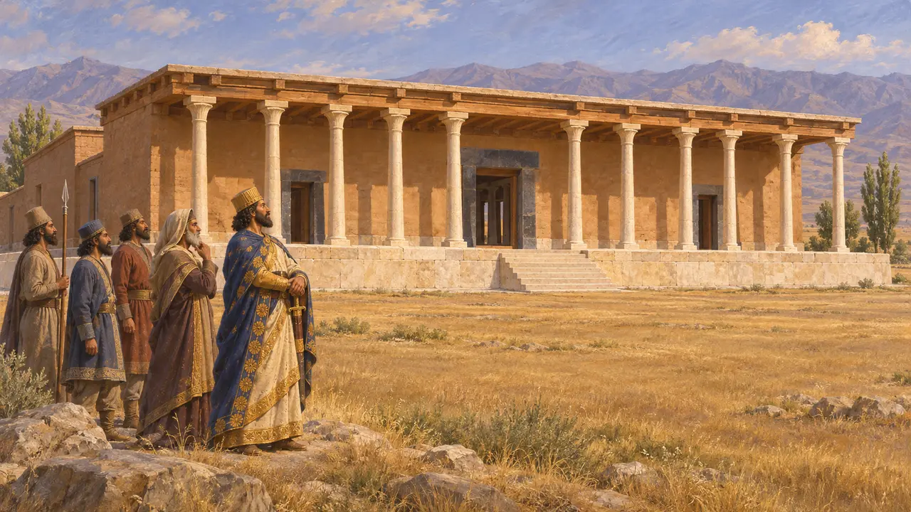

帕萨尔加德是居鲁士建造的第一座王室中心，P宫是今人对其御花园旁一座大型列柱建筑的称呼。学者称之为寝宫，但其确切用途不明。发掘者认为，居鲁士开工兴建，至公元前530年去世时尚未完成，工程在大流士治下继续进行。
游戏中： 在帕萨尔加德关卡（公元前530年）中，寝宫是一座以石灰石块和木材逐石砌起的纪念建筑。游戏没有表现后来的工程：其雕刻门道很可能是在大流士时期才完成的。

发掘者的发现
见于史载戴维·斯特罗纳克1961年至1963年的发掘揭示出一座中央大厅，内有三十根立柱，排成五行，每行六根，两侧各有一道柱廊，较长的一道面向花园。柱础以深色与浅色石材相配，这种双色效果也见于附近的S宫。屋顶和天花板为木构，均未能保存下来。
D. Stronach, Pasargadae, 1978

居鲁士去世时尚未完工
见于史载这座建筑有些部分仍显粗糙或未竟，门道浮雕的风格也与其余部分不同。浮雕仅存下半部，可见国王的双足和袍服下摆。袍褶上一段简短的三语铭文称居鲁士为大王、阿契美尼德人。斯特罗纳克认为，居鲁士在宫殿完工前去世，由大流士将其完成。
D. Stronach, Pasargadae, 1978

居鲁士铭文由谁撰写
争夺中这些铭文以古波斯语、埃兰语和巴比伦语写成。大流士在贝希斯敦宣称，在他治下创制了一种新的文字，许多学者据此认为古波斯文字创制于他的统治时期。若果真如此，那么提及居鲁士之名的铭文便是大流士所添，他有理由尊崇这位开国者。另一些学者则认为，这种文字或许在居鲁士时代便已存在。
DB §70; D. Stronach, Pasargadae, 1978

爱奥尼亚与吕底亚石匠
见于史载工具痕迹与接缝显示出小亚细亚西部常见的技法，如齿凿、铁锔和精细修整的接合面。卡尔·尼兰德据此认为，居鲁士攻取萨第斯后，来自吕底亚与爱奥尼亚的工匠曾在帕萨尔加德劳作。若此说成立，这座建筑便汲取了新近臣服各族的技艺。
C. Nylander, Ionians in Pasargadae, 1970

建于胜利战场上的宫殿
后世传说五个多世纪后成书的斯特拉博称，居鲁士之所以尊崇帕萨尔加德，是因为他在最后一战中于此击败了米底人阿斯提阿格斯，并就地建起城市与宫殿。迄今的考古发掘并无证据将此地与那场战役联系起来。这个故事或许源于此地作为居鲁士之城的盛名。
Strabo 15.3.8
来源
- D. Stronach, Pasargadae, 1978
- C. Nylander, Ionians in Pasargadae, 1970
- DB §70
- M. Root, The King and Kingship in Achaemenid Art, 1979
- Strabo 15.3.8
- P. Briant, From Cyrus to Alexander, 2002